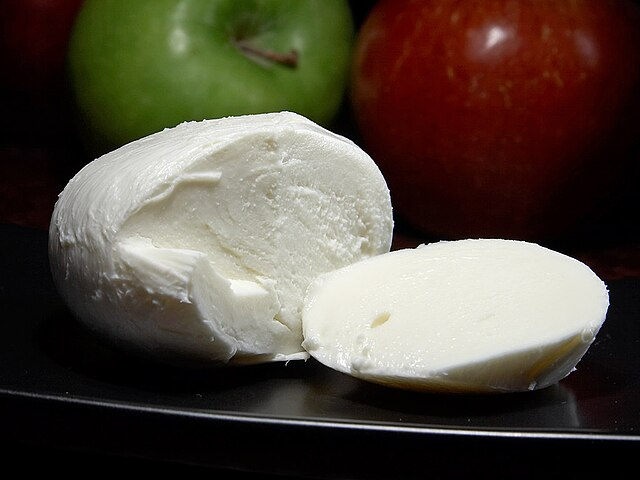
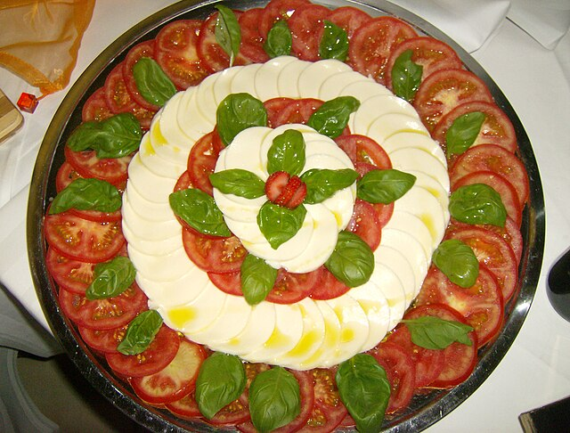
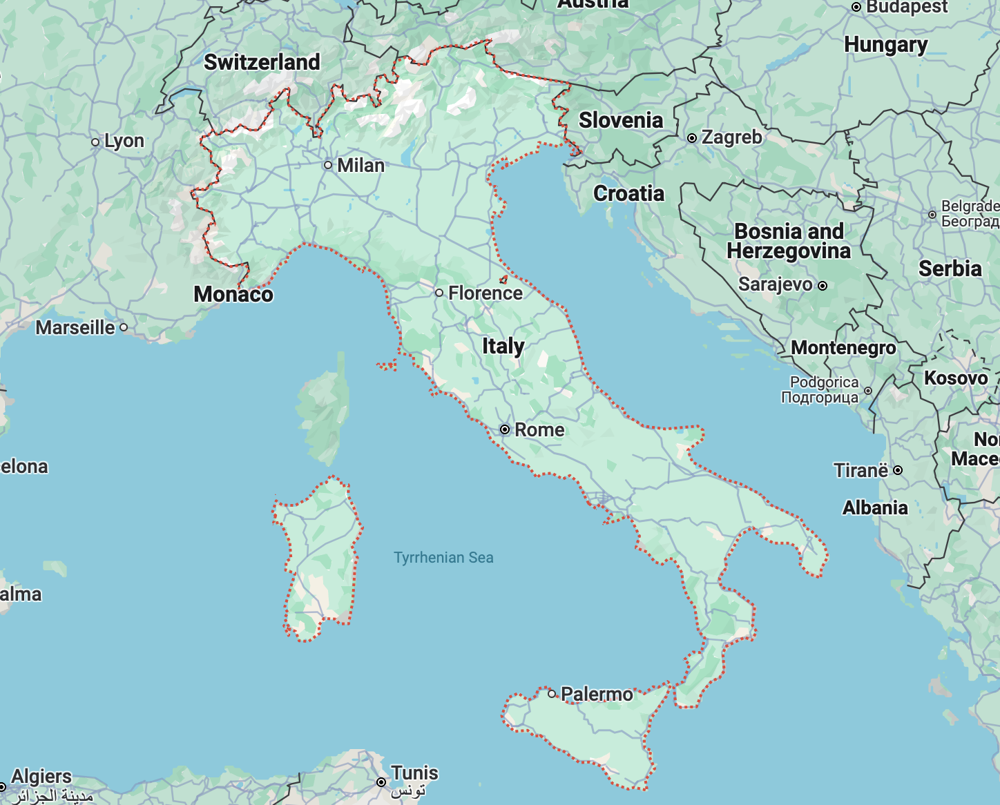

- Home
- Cheese



MOZZARELLA
- Region: Italy
- Milk: Water buffalo, cow
- Texture: Semi-Soft
Mozzarella is a traditional Italian cheese known for its elastic texture and creamy, fresh flavor. While authentic Italian mozzarella is made from the milk of a water buffalo, most imitations are produced using cow’s milk. The production process of Mozzarella is known as “pasta filata”, where curd mixed with whey is stretched until it reaches a smooth consistency. It is then molded into a sphere and stored in water to maintain its freshness.
More Info